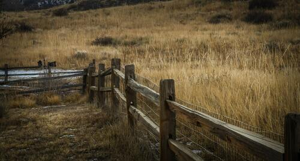

Soda Springs Idaho

Weather Summary
Current Conditions:
Current Temperature: °F
Wind Chill: °F
Humidity:
Wind Speed: 12 mph
Upcoming Local Events:
This Unique Town In Idaho Is Anything But Ordinary
When you live in a state as filled to the brim with small towns as Idaho, you come to realize that every itty-bitty community has its own personality and its own “landmark” attraction that sets it apart from the town next door. Fortunately, when it comes to Idaho, our attractions aren’t your average “World’s Largest Ball of Twine,” like so many other roadside tourist stops across the country. Instead, our beautiful state is filled with unique geologic features, natural wonders, and stunning places to unwind, rejuvenate, and drink in the quaint wonders of small town life.
But there are definitely a few communities that we all continue to go back to time and time again–the ones that have that extra something. From Idaho’s own “Old Faithful” and unique Yellowstone-style geology to its man-made “volcano,” rich rural beauty, and community atmosphere, this one town seems worth a closer look. Read Full Article...

Weathery Conditions
➪ 30 N 1st E
Preston, ID 83263
☎ (999)999-9999
✉ weatheryconditions@tws.com